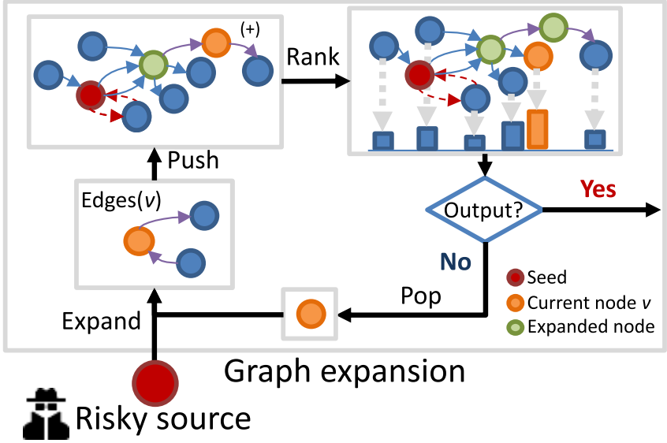

Graph-based Transaction tracing
The transaction subgraph spiders aim at collecting the transactions (or token transfers) related to the specific source addresses. BlockchainSpider provides the following strategies for sampling:
- BlockchainSpider.strategies.txs.BFS: Breath-First Search.
- BlockchainSpider.strategies.txs.Poison: A kind of taint analysis technology.
- BlockchainSpider.strategies.txs.Haircut: A kind of taint analysis technology.
- BlockchainSpider.strategies.txs.APPR: the Approximate Personalized PageRank algorithm.
- BlockchainSpider.strategies.txs.TTRRedirect: the Transaction Tracing Rank algorithm.
The performance comparison of the above strategies is as follows:

All transaction subgraph spiders are implemented based on the framework graph expansion, which has four core operations:
- Expand: collects all transactions related to a given address.
- Push: merges the collected transactions to the subgraph.
- Rank: computes the relevance of addresses in the subgraph to the source address.
- Pop: select an address for expanding.

The implementation of different strategies are as follows:
| Strategy | Push & Rank | Pop & Expand |
|---|---|---|
| BFS | Add expanded neighbors to a queue | Select a unexpanded node in the header of the queue for expanding |
| Poison | Add expanded out-degree neighbors to a queue | Select a unexpanded node in the header of the queue for expanding |
| Haircut | Allocated the pollution value to the neighbors according to the edge weight | Select a unexpanded node with the highest pollution for expanding |
| APPR | Use the local push procedure for extended neighbors | Select a node with the highest residual for expanding |
| TTR | Use the TTR local push procedure for extended neighbors | Select a node with the highest residual for expanding |
💡 For more details, please refer to the paper: TRacer: Scalable Graph-Based Transaction Tracing for Account-Based Blockchain Trading Systems.
Customise your own strategy
You can implement your own strategy by inheriting the BlockchainSpider.strategies.txs.PushPopModel class.
Here's the simplest example, in which for each Ethereum address, we track only the output money transfer with the largest Ether value.
First, we create a new file mystg.py in the root directory of the project and declare a PushPopModel class:
from typing import Any, Dict, Tuple
from BlockchainSpider.strategies.txs import PushPopModel
class MyStrategy(PushPopModel):
def __init__(self, source, **kwargs):
super().__init__(source, **kwargs)
self.to_be_vis = set()
def push(self, node, edges: list, **kwargs):
# node is the address of the current node
# edges is a list of money transfers related to the current address
# each edge is a dict with fields as TransferItem, e.g., `AccountTransferItem`,
# please refer to the fields at `BlockchainSpider/items/subgraph.py`
edges = [edge for edge in edges if edge['address_from'] == node]
if len(edges) == 0:
return
edges.sort(key=lambda x: int(x['value']), reverse=True)
self.to_be_vis.add(edges[0]['address_to'])
def pop(self) -> Tuple[Any, Dict]:
if len(self.to_be_vis) == 0:
return None, {}
node = self.to_be_vis.pop()
# the returned dictionary will be used as the kwargs for the next push
# we don't need to pass the context, so we return the empty dictionary
return node, {}
def get_context_snapshot(self) -> Dict:
return {'to be visited': self.to_be_vis}
def get_node_rank(self) -> Dict:
return {}
Next, you can start the txs.blockscan spider and mount the new strategy:
scrapy crawl txs.blockscan \
-a source=0xYourSourceAddress \
-a apikeys=YourApiKey1,YourApiKey2 \
-a strategy=mystg.MyStrategy